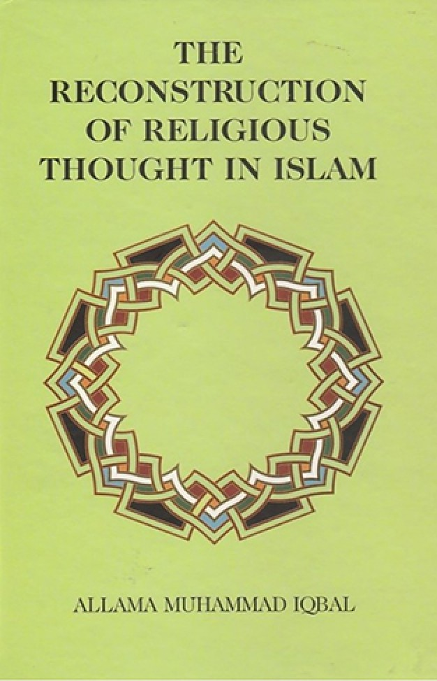

Reconstruction of Religious Thoughts
Philosophy
Religion
Islam
Description
The Reconstruction of Religious Thought in Islam is a compilation of lectures delivered by Muhammad Iqbal on Islamic philosophy and published in 1930. These lectures were delivered by Iqbal in Madras, Hyderabad, and Aligarh. The last chapter, "Is Religion Possible?", was added to the book from the 1934 Oxford Edition onwards. In Reconstruction, Iqbal called for a re-examination of the intellectual foundations of Islamic philosophy. The book is a major work of modern Islamic thought.
Book Details
Publisher
Stanford University Press
ISBN
978-0804781473
Publication Date
May 22, 2013
File Size
~2-3 MB
Format
PDF, EPUB